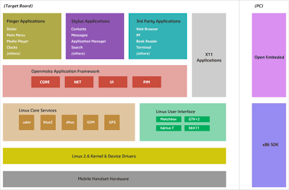

End user Freedom is our passion. The entire OpenMoko system and application software are build using Free and Open Source Software (FOSS)
On the system side, OpenMoko uses software with a tireless history of success and stability, such as the Linux kernel, the GNU C library, the X window system, and the GTK+ toolkit, to name only a few.
OpenMoko is Mobile FOSS.
New technology requires new code. As we implement extensions, such as device drivers, or create something entirely new, such as the OpenMoko GUI framework and our collection of smartphone applications, the code is available though SVN, or, even better, has already been merged into the upstream sources.
All this power is neatly bundled into the OpenMoko distribution which is based on OpenEmbedded, a meta-distribution containing more than 15,000 packages.
Well-known FOSS-based infrastructure and standards-based development tools enables developers to quickly make the Neo do exactly what they want. Whether this means just making a small personalization, porting an existing application, or even writing a new application from scratch, end users are in total control. The way things should be. And since OpenMoko is Mobile FOSS, developers can share the fruits of their work with the rest of the community.
For the mobile world this is an entirely new concept. But FOSS is not new. It’s already tried and tested in the server world. FOSS is what powers the Internet. OpenMoko is just taking things mobile. But for developers unaccustomed to the world of Free Software, OpenMoko is the place to start. Excellent community resources are available to help with the learning process. And since OpenMoko runs libraries and components commonly found on the Desktop, the knowledge gained can be applied to the entire FOSS domain.
(*) GPS position calculation and, also for regulatory reasons, firmware contained in peripheral chips are the only exceptions. Those components communicate with the rest of the system through openly specified interfaces, e.g., NMEA, GSM 07.05, etc.

{kind=link}